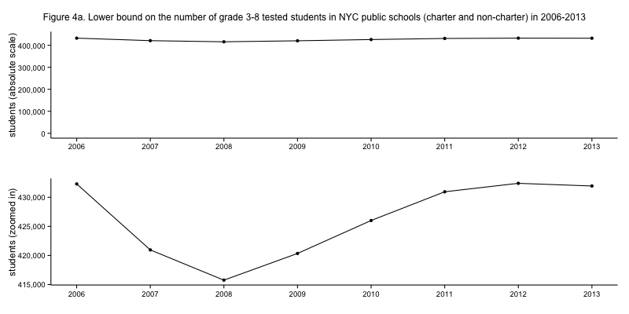
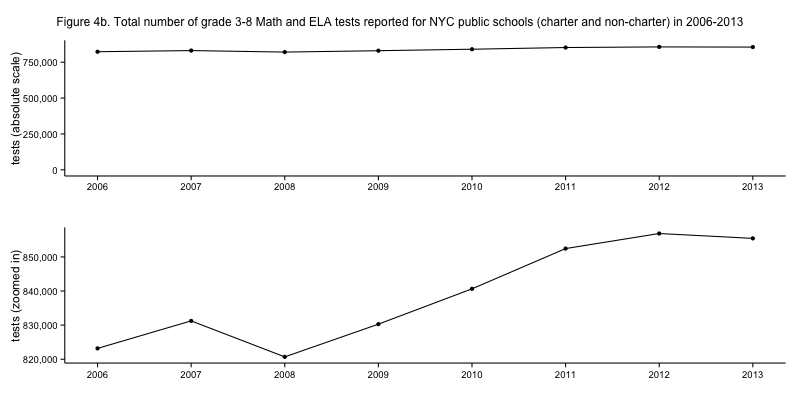

NYC standardized test results: The total number of students and tests
Friday November 15, 2013
[caption id="attachment_527" align="aligncenter" width="525"] Figure 4a. Lower bound on the number of grade 3-8 tested students in NYC public schools (charter and non-charter) in 2006-2013[/caption]
{kind=link}
Continuing to look at the NYC test data, I wondered how the number of students tested has changed over the years. All we have is the number of test results reported for Math and ELA, so a lower bound for the total number of students tested is the higher of the two counts. That would mean that every student who took the less-tested subject also took the more-tested subject. The actual number would be higher, for example, if all the students who took the ELA test took only the ELA test, and all the students who took the Math test took only the Math test. That would make the number of students who took an exam equal to the total number of exams, which we can also look at. The former is shown above; the latter is shown just below. As always, code is available.
[caption id="attachment_529" align="aligncenter" width="525"] Figure 4b. Total number of grade 3-8 Math and ELA tests reported for NYC public schools (charter and non-charter) in 2006-2013[/caption]
{kind=link}
The dip from 2012 to 2013 for both students and tests is interesting, and may be due to District 75 issues which will be commented on at length a bit later. The strange drop in students from 2006 may be related to the other strangeness in that year, in which many more students took Math than ELA exams. Perhaps some students who took the Math but not ELA exam in 2006 stopped taking the Math exam after 2006 rather than starting to take the ELA exam?
It might be interesting to compare these figures to reported enrollment numbers. These sums come only from the number of test results that are reported to constitute the averages in the test reporting files, so it isn't clear that they will necessarily track with enrollment trends. I will not do this for the moment.
[table of contents for this series]
This post was originally hosted elsewhere.